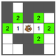
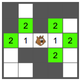

Éloignement
|
Dans la grille ci-dessous, les cases que Castor peut atteindre en 1 pas sont marquées avec un 1. Cliquez sur les cases que Castor peut atteindre en 2 pas. Dans la grille ci-dessous, les cases que Castor peut atteindre en 4 pas sont marquées avec un 4. Cliquez sur les cases que Castor peut atteindre en 5 pas, et pas moins que 5 pas. Dans la grille ci-dessous, les cases que Castor peut atteindre en 5 pas sont marquées avec un 5. Cliquez sur les cases que Castor peut atteindre en 7 pas, et pas moins que 7 pas. |
Exemple : |
|
|
|
||
 
